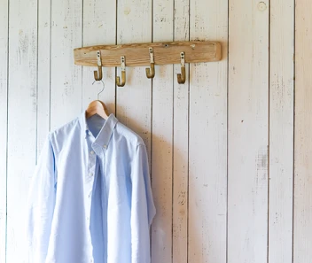
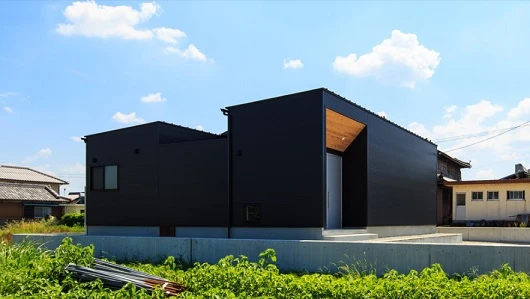
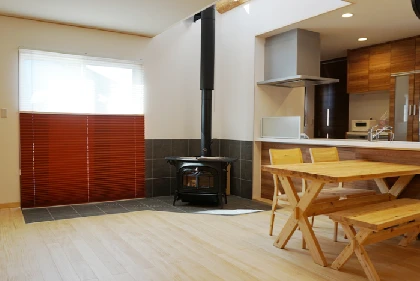
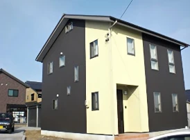
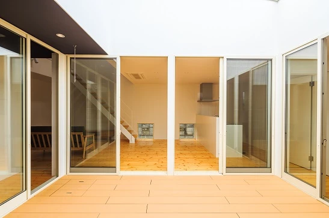

貯蓄を増やしながら家を建てる秘訣
こんにちは。富山で自然素材にこだわるホンモノの家、フジ創アイノスです。 65歳以降の夫婦の最低生活費は、約22.5万円と言われています。（"住居費"と"ゆとり費"を足すと約35万円必要だと言われています） 一方で、平均的
続きを読む →FUJISOU AINOS JOURNAL
家づくりのこと、暮らしのこと。
日々の想いを、お伝えします。
新しい記事から 27・40ページ
こんにちは。富山で自然素材にこだわるホンモノの家、フジ創アイノスです。 65歳以降の夫婦の最低生活費は、約22.5万円と言われています。（"住居費"と"ゆとり費"を足すと約35万円必要だと言われています） 一方で、平均的
続きを読む →こんにちは。富山で自然素材にこだわるホンモノの家、フジ創アイノスです。 ドアの数を減らすための2つの方法 その1：廊下をなくす 廊下は、部屋と部屋とをつなぐためにあるのですが、部屋と部屋をダイレクトでつなぐことが出来れば
続きを読む →こんにちは。富山で自然素材にこだわるホンモノの家、フジ創アイノスです。 今日は節分です。 ２月２日が節分になるのは、124年ぶりだそうですね。 一生に一度あるかないかの日ということで、なんだか特別感のある日となりました。
続きを読む →
こんにちは。富山で自然素材にこだわるホンモノの家、フジ創アイノスです。 大きさが同じである家を、全く同じ性能でつくろうとしても、その価格は建てる家の形状によって異なります。 例えば、30坪の平屋を建てる場合、縦横の長さが
続きを読む →こんにちは。富山で自然素材にこだわるホンモノの家、フジ創アイノスです。 土地に関しても、無駄に広い土地を購入するべきではありません。 というのも、あなたにとってちょうどいい土地の広さが、50坪であるにもかかわらず、ただ広
続きを読む →こんにちは。富山で自然素材にこだわるホンモノの家、フジ創アイノスです。 例えば、1つ400円の商品が2つ必要となり買い物に行ったところ、3つ買うと1000円という特価売りをしていたら、思わずその割安感に飛びついてしまいま
続きを読む →
こんにちは。富山で自然素材にこだわるホンモノの家、フジ創アイノスです。 衣服はなぜ必要なのでしょうか。 その起源は、身体を保護することから始まっています。 雨、風、紫外線、暑さ寒さを防いで体温を保持する「衣」は、食住と並
続きを読む →
こんにちは。富山で自然素材にこだわるホンモノの家、フジ創アイノスです。 防犯性が高くなれば家事も楽になる！？ こちらのお家は、外から見えない場所に洗濯物が干せるようになっています。 その理由の1つが防犯面への配慮です。
続きを読む →こんにちは。富山で自然素材にこだわるホンモノの家、フジ創アイノスです。 こちらお家は、正面に窓が全くないのですが、あえて正面に窓をつくらなければ、家の間取りが分からなくなるため防犯性が高くなります。 また、窓だけじゃなく
続きを読む →
こんにちは。富山で自然素材にこだわるホンモノの家、フジ創アイノスです。 どんな土地でも家の中に光は届けられ る この写真からわかるように、たとえ真南にそれほど距離を空けず、2階建てのお家が建っているとしても、この家は窓か
続きを読む →
こんにちは。富山で自然素材にこだわるホンモノの家、フジ創アイノスです。 家の間取りは、予算を含む要望だけでつくるものではなく、その土地がどんな環境であるかに大きな影響を受けます。 また、間取りと同じように家の外観も、その
続きを読む →こんにちは。富山で自然素材にこだわるホンモノの家、フジ創アイノスです。 今日は１年で一番寒い日とされる大寒です。富山では－3℃まで下がりました。 人は住まいから影響を受けています。 この寒い時期には、室内の温度差や室内外
続きを読む →
こんにちは。富山で自然素材にこだわるホンモノの家、フジ創アイノスです。 ✔2つの問題を同時に解決する秘訣 小さな子どもたちは、親の気配が感じられないところで遊ぼうとしないし、親の方も、目が届かない所で子どもたちを遊ばせた
続きを読む →こんにちは。富山で自然素材にこだわるホンモノの家、フジ創アイノスです。 最も多く建てられている家は、 "総2階建て" と呼ばれる1階と2階の面積がほぼ同じである家ですが、その理由は、この家の建て方が最もコストパフォーマン
続きを読む →
こんにちは。富山で自然素材にこだわるホンモノの家、フジ創アイノスです。 家の温度を暖かく保つことが、健康を保つために大切です。 それにはまず家の断熱力を上げること。 日本の「エコ住宅」はそもそも間違っています。 穴の開い
続きを読む →
こんにちは。富山で自然素材にこだわるホンモノの家、フジ創アイノスです。 道路の状態の悪さなど、今回の大雪の影響がいまだに解消しきれないでいます。 富山県の降雪量は日本で上位です。 家づくりはその土地の気候に合わせて行わな
続きを読む →
こんにちは。富山で自然素材にこだわるホンモノの家、フジ創アイノスです。 ✔家の品質を一切落とさず建築コストを抑える工夫 工夫1：必要以上に部屋を大きくしない まず1つ目の工夫が、必要以上に部屋を大きくしないということです
続きを読む →こんにちは。富山で自然素材にこだわるホンモノの家、フジ創アイノスです。 「中庭」をつくることが、その土地で懸念される問題点を解決するための最良の手段になることがあります。 例えば、周囲が家に囲まれていたり、南に隣接して家
続きを読む →こんにちは。富山で自然素材にこだわるホンモノの家、フジ創アイノスです。 記録的な大雪となり、大変な日々をお過ごしかと思います。 富山県は車社会なので、このような大雪になると交通障害が重大です。 今回の大雪で多くの人が何時
続きを読む →こんにちは。富山で自然素材にこだわるホンモノの家、フジ創アイノスです。 今日は大雪となりました。 この後も大雪や吹雪の恐れがあるようなので、お気をつけてお過ごしください。 室内の事故にも気を付けましょう。 この時期に多い
続きを読む →こんにちは。富山で自然素材にこだわるホンモノの家、フジ創アイノスです。 税と社会保険料の負担増が止まらない時代を生き抜いていくためには、自分自身で準備するしかありません。 そのためにまずすべきことは 「節約」 です。 例
続きを読む →こんにちは。富山で自然素材にこだわるホンモノの家、フジ創アイノスです。 日本ではここ数十年、税と社会保険料の負担が増え続けています。 朝日新聞の2018年6月3日の記事による試算によれば、一般の働く世帯の1ヶ月あたりの税
続きを読む →
こんにちは。富山で自然素材にこだわるホンモノの家、フジ創アイノスです。 ✔使えない窓を省くことよる数々のメリット その1：断熱性能が高くなる 窓が少なくなるということは、イコール壁の数が多くなるということでもあります。
続きを読む →
こんにちは。富山で自然素材にこだわるホンモノの家、フジ創アイノスです。 窓は、外からの"光"と"風"を室内に採り込むために存在します。 この2つの機能をしっかり果たしてもらうためには、窓のつくり方を熟考する必要があります
続きを読む →